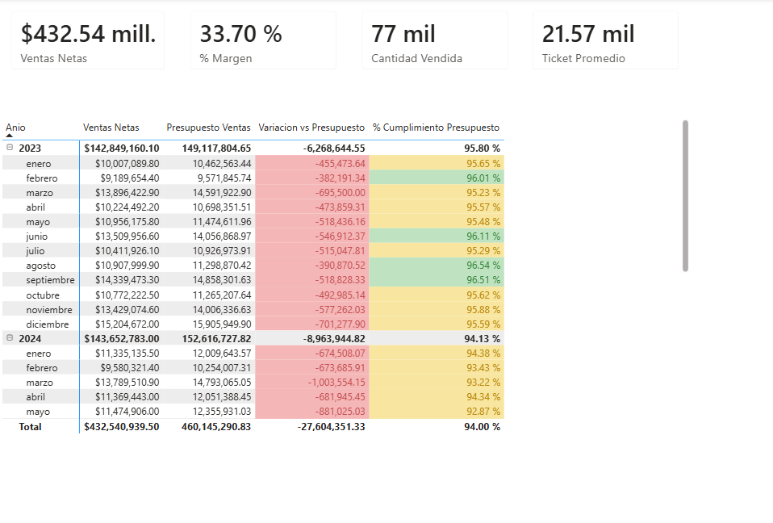
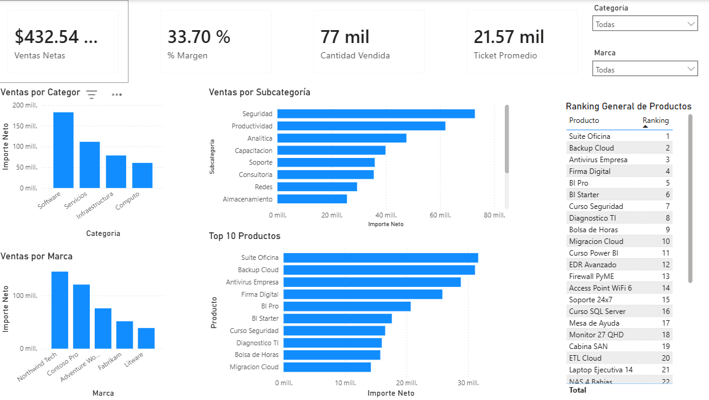
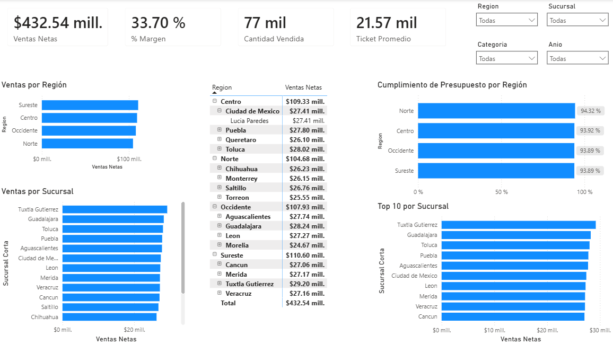
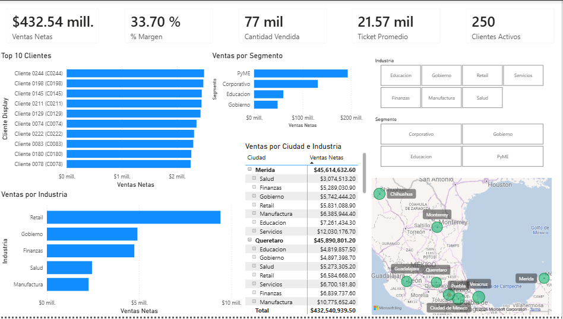

Power BI · DAX · Modelado
Ventas, presupuesto y rentabilidad
Proyecto practico construido desde cero para ejercitar modelo estrella, calendario, medidas DAX, ranking, presupuesto vs real, tooltips y analisis por producto, region y cliente.
Vista general
Objetivo del proyecto
El objetivo fue construir un dashboard comercial completo para analizar ventas, margen, descuentos, devoluciones, clientes, productos, sucursales y presupuesto. El caso esta disenado para practicar decisiones reales de BI: granularidades distintas, relaciones entre tablas, calendario, medidas reutilizables y formato visual orientado a negocio.
Capturas
Paginas del reporte




Modelo
Tablas y relaciones
El modelo sigue una estructura estrella: tablas de hechos para ventas, devoluciones y presupuesto; dimensiones para fecha, producto, cliente y sucursal.
- FactVentas: ventas diarias por cliente, producto y sucursal.
- FactPresupuesto: presupuesto mensual por categoria y sucursal.
- FactDevoluciones: devoluciones ligadas a VentaID.
- DimFecha: calendario marcado como tabla de fechas.
DAX
Medidas destacadas
Ventas Netas =
SUM ( FactVentas[ImporteNeto] )% Margen =
DIVIDE ( [Margen], [Ventas Netas] )% Cumplimiento Presupuesto =
DIVIDE ( [Ventas Netas], [Presupuesto Ventas] )Ranking Productos =
IF (
ISINSCOPE ( DimProducto[Producto] ),
RANKX (
ALLSELECTED ( DimProducto[Producto] ),
[Ventas Netas],
,
DESC,
DENSE
)
)Aprendizajes
Decisiones tecnicas
- Crear una version de CSV con formato regional es-MX para evitar errores de separador decimal.
- Usar una dimension mensual para comparar ventas diarias contra presupuesto mensual.
- Separar medidas base de medidas derivadas para simplificar mantenimiento.
- Validar relaciones cuando una medida de devoluciones no respondia al filtro de producto.
- Usar tooltips para mostrar margen, descuento y devoluciones sin saturar paginas principales.
Estado
Proyecto documentado para portafolio.
Cuando publiques el reporte con datos ficticios, agrega aqui el enlace de Power BI Publish to Web o capturas reales del dashboard.